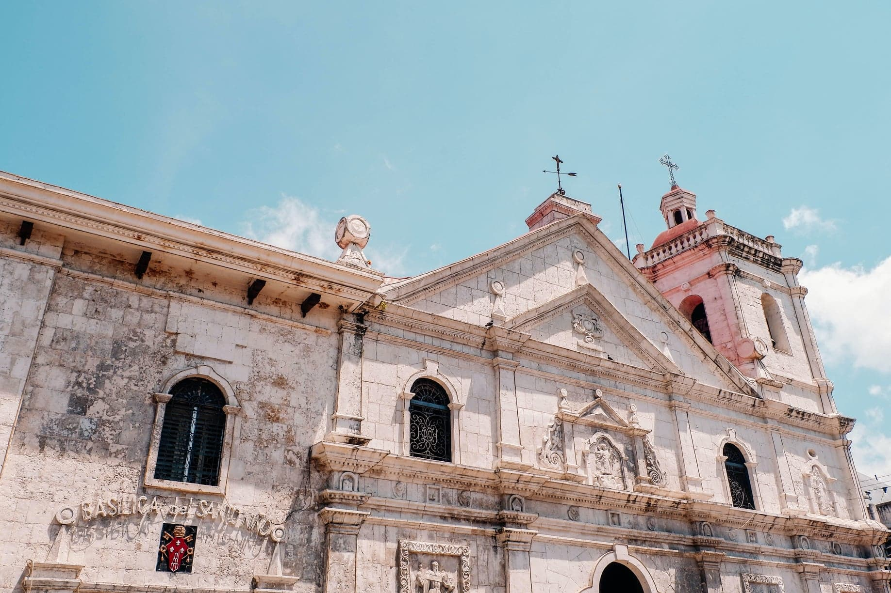
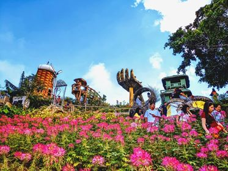
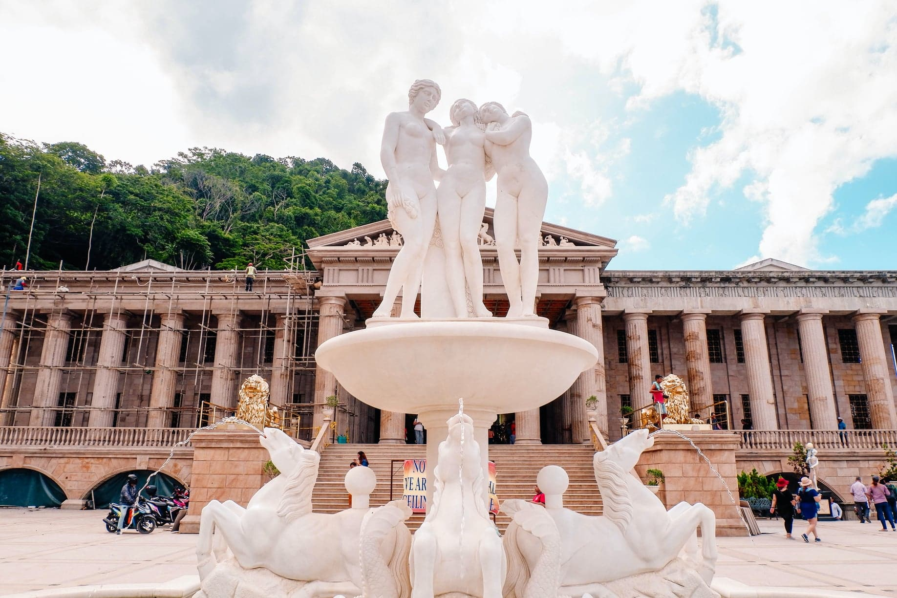
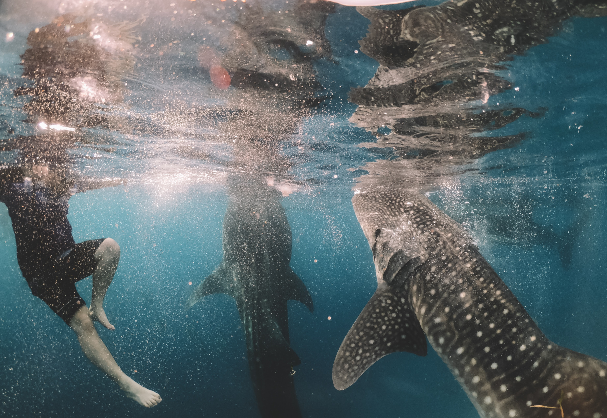
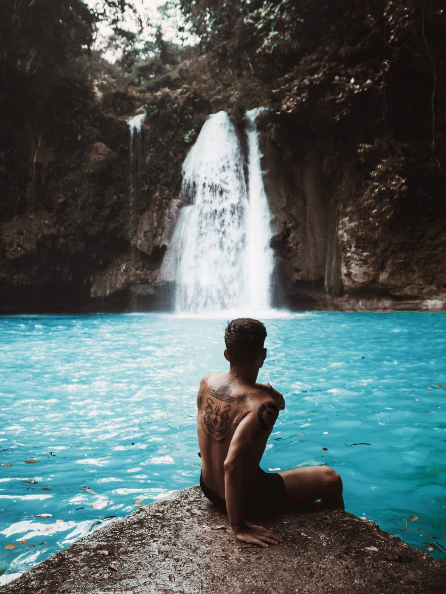
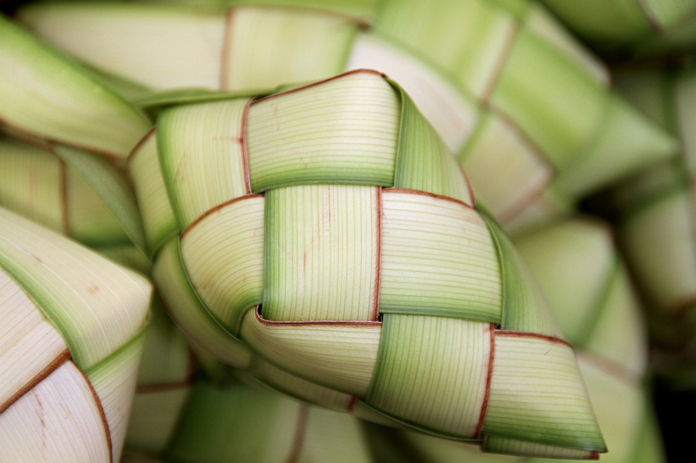
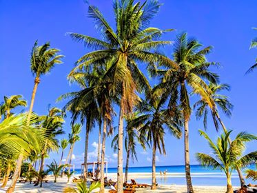
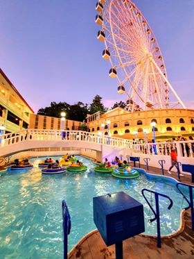

Top Ten Things to Do When In Cebu!
Cebu is geographically stretched and elongated. From North to South, there is always something exciting that awaits visitors to the island. We pick the Ten things to do when you're in Cebu:
1.) Magellan’s Cross
This is one of Cebu’s most-iconic landmark. The cross was planted by the Spanish and Portuguese explorers ordered by Ferdinand Magellan back in 1521. This marked the Filipinos Christianised in the island. The cross is a replica of the original, which was believed to be destroyed when Ferdinand Magellan died.

2.) Santo Niño Church
This is one of Cebu’s most-iconic landmark. The cross was planted by the Spanish and Portuguese explorers ordered by Ferdinand Magellan back in 1521. This marked the Filipinos Christianised in the island. The cross is a replica of the original, which was believed to be destroyed when Ferdinand Magellan died.
3.) Sinulog Mardi Gras
Sinulog is a religious celebration in honour of the patron saint, Santo Nino. The Mardi gras takes place on the 3rd Sunday of January, and Cebu City is turned into a massive street festival. It is one of the most visited festivity and dancers in their colourful costumes parades the streets in their individual Sinulog-themed dance. One thing that you will notice is a Festival Queen carrying a Santo Nino, and plays an important part in the groups Sinulog dance. This is definitely a must visit!

4.) Sirao Gardens
Another place of interest is Sirao Gardens which is located in the hills of Busay. Getting there can be a trek. We suggest that you hire a private transport to get there, although tour companies also provide services to Sirao. For a small entrance fee, this place has a great view of the nature scenery, and not to mention, a lot of Instagrammable landmarks that will make your trip up there worth it. (Keep an eye out for the famous hand statue).
5.) Temple of Leah
Before making your way up to Sirao Gardens, don’t forget to drop by to the Temple of Leah. There is also an entrance fee required to enter. At first, you will feel that you are somewhere in Rome or Greece with this Roman-inspired architecture. The place has a romantic story behind it. It was built in honour of a man’s love to his woman. Let’s just say it has a similar romantic reason to building the Taj Mahal in India.
6.) Swimming with the Whale Sharks
This is one of the most interesting and exciting activity in Cebu! Located in the southern part of Cebu, which is in a town called Oslob. It is a 3-4 hour journey (depending on the traffic and time). The cheapest way to get there is by bus from Cebu City South Bus Terminal. We suggest getting there very early in the morning, as it gets very busy. Another option, is to stay in one of the guest houses or hotels within the area that fits your budget.
7.) Kawasan Falls
If you are planning to do a trip around the South of Cebu, then we recommend a trip to Kawasan Falls. Located in the town of Badian, this is the most popular waterfalls in Cebu. For the adventurous, this is one of your best options as they offer canyoneering adventures. So we recommend a whole for this experience.
8.) Try Cebuano food and Delicacies
Cebu is known for its delicious food as well as delicacies (North or South of the island, there are special delicacies to try). One of the most popular food is Lechon, also known as Roast Pig. The taste is very distinct compared to the other regions of the Philippines. Another popular food is Mango. The mangoes are golden yellow and naturally sweet. They are also turned into dried mangoes, and are very popular amongst the international visitors. Rice is the staple of the Philippines, and is eaten 3 times a day. When enjoying a Cebuano dish in a food market, you will notice that the rice may be wrapped in dried diamond-shaped banana leaves called “Puso” or “Hanging Rice.”
9.) Visit Bantayan Island
Bantayan Island is blessed with crystal clear water and White Sandy beaches. It is truly an island paradise, located in the North of Cebu. Getting there can be an adventure, as you will be driving or taking a bus from North City Bus Terminal station to San Remigio which takes around 2 and a half hours, and then take a barge / ship to Bantayan Island, which takes around 1 hour. There are resorts that fits everyone’s budget, and is affordable for visitors. Aside from the beautiful beach that the island proudly boasts, we recommend other activities such as a visit to Obo-ob Mangrove Eco Park for relaxation.
10.) Anjo World
Cebu finally have its own theme-park in the name of Anjo World, located in Minglanilla, which is roughly around 1 hour drive (depending on traffic, and be a bit longer) from Cebu City. For those with kids, this is definitely a place to visit. They even have their own version of the London Eye which they call the “Anjo Eye.”
